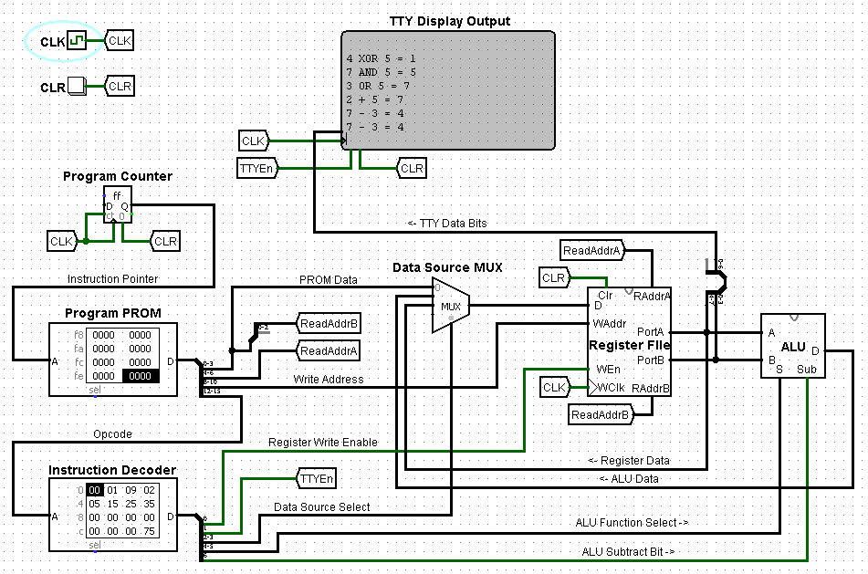
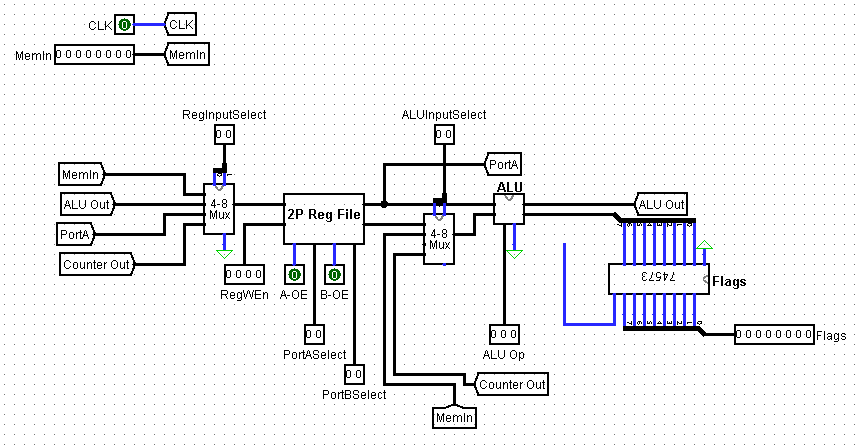

I created a whole sub-portfolio for my "Front-End Web Development II" class.

I designed a working 4-bit microprocessor in Logisim for a class final, which among other operations, demonstrated both software and hardware subtraction.

The 4-bit CPU fascinated me so much that one of my spare-time projects is to design and build an 8-bit microprocessor with standard 7400-series logic ICs; this is a small in-progress subset.
I also developed my own Raspbery Pi-based wireless RC car; I don't have a photo yet, but you can download the Python scripts here.